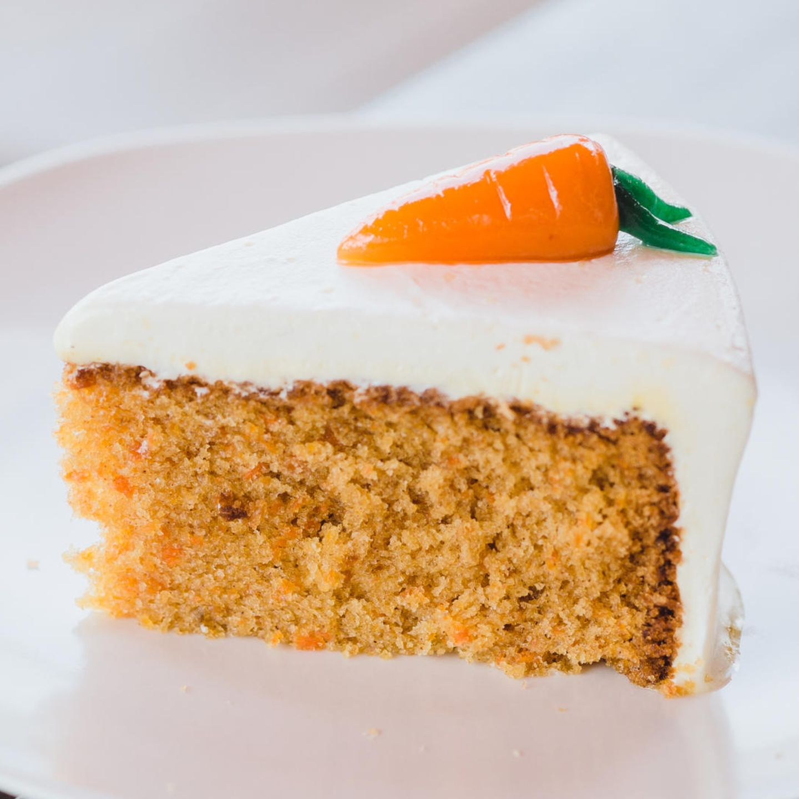

Möhrenkuchen

Description
A nice and fresh recipe for Möhrenkuchen. It consists mainly of carrots, almond and nuts
The cream on top will be extra refreshing if the cake is put in the refridgerator vor at least 6 hours
Ingredients
- 350 g carrots
- 200 g grated nuts
- 200 g choped almond
- 180 g sugar
- 100 g flour
- 1x Citro Back
- 1 tsp. backing powder
- 6 eggs
Steps
- Chop the carrots really really tiny.
- Mix all ingredients in a bowl
- Put in oven for 60 min with 200°C